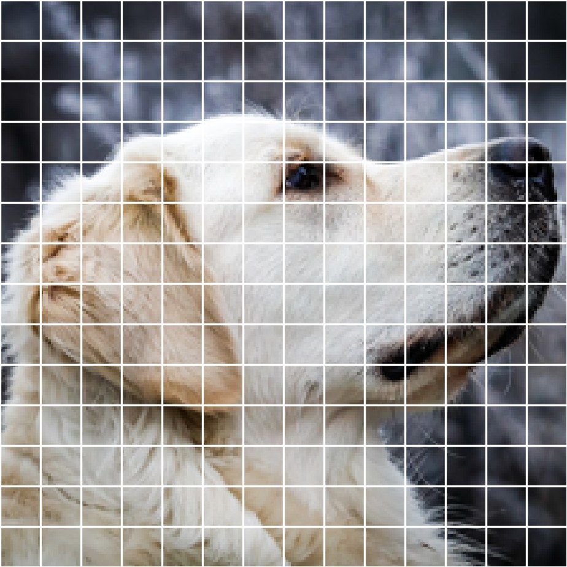
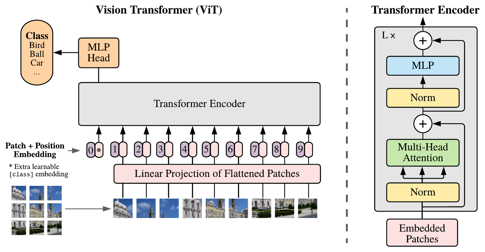
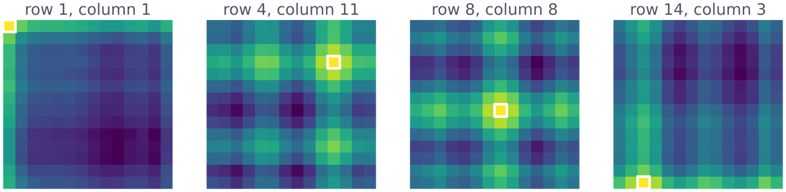
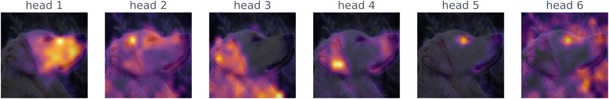
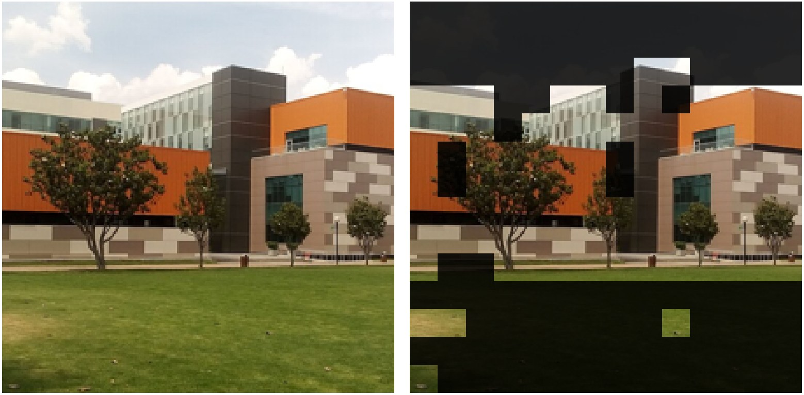

Trace how a Vision Transformer turns an image into a sequence of tokens.
Explain the role of the CLS token and the position embeddings.
Compare a ViT with a CNN: what each assumes and how much data each needs.
Choose between attention, convolution and recurrence for a real problem.
The problem
CNNs ruled images, Transformers ruled text
For a decade, the best vision models were CNNs: small filters that slide over the image.
Since 2017, the best language models have been Transformers: every token looks at every other token through attention.
In 2020, Dosovitskiy et al. asked: what if we give a Transformer an image as if it were a sentence?
A Vision Transformer uses the same encoder as a text model. Only the input changes.
From image to tokens
Vision Transformer
An image becomes a sequence of patches

Photo: Dietmar Rabich, CC BY-SA 4.0.
224 × 224 pixels cut into patches of 16 × 16.
224 / 16 = 14, so 14 × 14 = 196 patches.
Each patch is flattened: 16 × 16 × 3 = 768 numbers, then projected to a vector.
From here on, a patch is just a token.
Vision Transformer
One linear layer turns a patch into a token
Vision Transformer
Patches in, the same encoder, a class out

Figure from Dosovitskiy et al. (2021).
A learned CLS token joins the 196 patches: 197 tokens go through the encoder.
Checkpoint
The same ViT with 16 × 16 patches receives a 384 × 384 image. How many patch tokens does it get, without the CLS token?
A. The image is cut in both directions, so the count is squared: 24 rows × 24 columns.
B counts only one row. C confuses the patch size, which is fixed, with the number of patches, which depends on the image; the position embeddings are interpolated to fit.
Vision Transformer
The model learns where each patch is

Computed with ViT-Base (google/vit-base-patch16-224).
Each map: how similar one patch's position vector is to all 196 (white square = that patch).
Nobody told the model the image is a grid. It learned rows and columns by itself.
Checkpoint
A ViT is trained without position embeddings. You shuffle the patches of a test image. What happens to its prediction?
C. Attention compares every token with every token, so without positions the order carries no information: the CLS token gathers the same mix either way.
A assumes the model knew the original places, but nothing told it. B confuses the CLS token with a patch; it is always first and is not shuffled.
What a ViT learns
What a ViT learns
Few built-in assumptions, so it needs a lot of data
A CNN assumes that nearby pixels go together. A ViT does not: its inductive bias is weak.
Trained on 14M–300M images, ViT matches or beats strong CNNs. On smaller datasets it falls behind.
ViT-Base: 12 layers, 12 heads, 768 dimensions, 86 million parameters.
Less built in means more to learn, and learning needs data.
What a ViT learns
The CLS token makes the decision
In every block, the CLS token attends to all 196 patches and gathers what it needs.
After the last block, a small MLP reads only the CLS token and outputs 1,000 class scores.
On our photos, ViT-Base says golden retriever (47%) and, for the campus, palace (60%).
ImageNet has no "university" class: the model can only answer with the classes it was trained on.
What a ViT learns
Each head looks at a different part

Attention of the CLS token in the last layer, one map per head: nose, eye, ear, fur.
This model (DINO) was trained with no labels at all.
Computed with DINO ViT-S/16 (Caron et al., 2021).
What a ViT learns
Without labels, it finds the building

Patches that hold 60% of the attention in each head, as in Caron et al. (2021). Photo: Moisés Álvarez Domínguez, CC BY-SA 3.0.
Sky and grass fade away. Nobody told the model what a building is.
Activity · 30 min
Build the input of a Vision Transformer
Part 1: cut an image into 16 × 16 patches.
Part 2: turn the patches into tokens with a CLS token and positions.
Part 3: assemble an encoder block and a tiny ViT.
Part 4: run a pretrained ViT and DINO, then answer the questions.